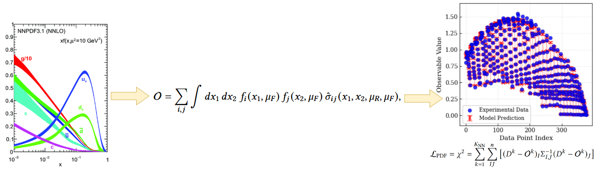
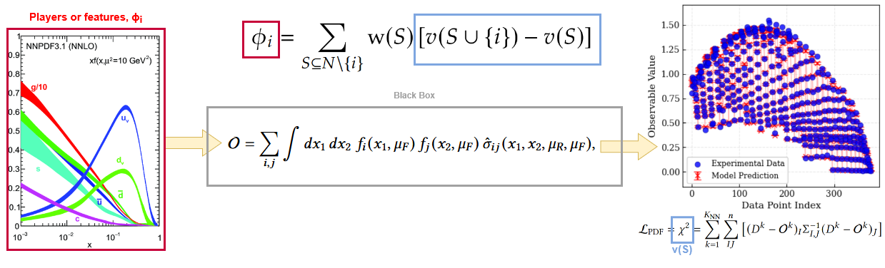
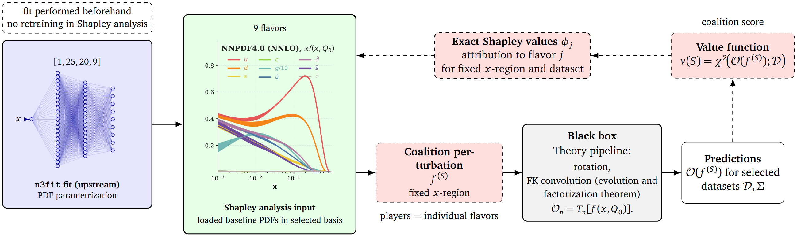
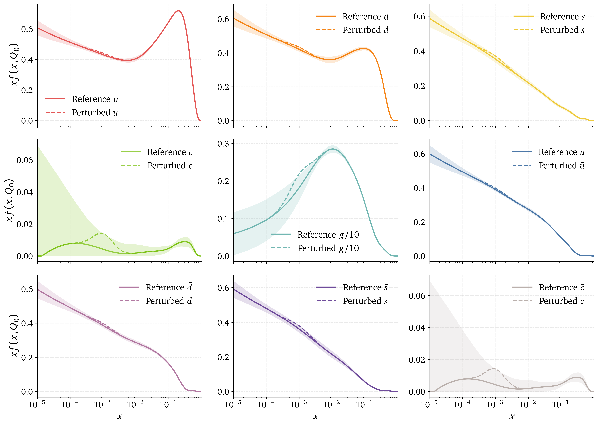
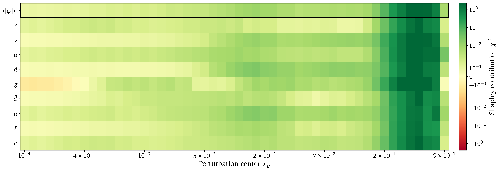
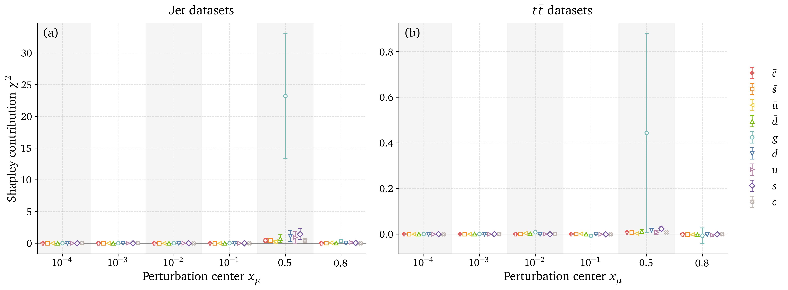

Shapley values meet NNPDF
Raphaël Bonnet-Guerrini1,In collaboration with: Stefano Carrazza2, Dakshansh Chawda2, Stefano Forte2, Eva Groenendijk2, Vincenzo Piuri1, and Ramon Winterhalder2
1Computer Science Department, University of Milan;
2TIF lab, Physics Department, University of Milan
Why do we need Parton Distribution Functions (PDFs)?
We collide protons, but the hard interaction occurs between their fundamental constituents, the partons.
Partons are not directly observed: the detector only sees final-state particles.
PDFs are the latent probability model we infer.
A proton is composed of quarks and gluons, whose momentum distribution is described by PDFs.
Parton Distribution Functions (PDFs) and NNPDF

- Describe the probability of finding a parton carrying a fraction \(x\) of the proton's momentum at a given energy scale \(Q^2\).
- Predicts outcomes of particle collisions.
- NNPDF uses NN to model PDFs without assuming a specific functional form.
- Trained on data from different experiments.
PDF fitting: an inverse problem
NNPDF solves an inverse problem: we have a set of experimental data and we want to find the underlying PDFs that best explain the data.

Theory (QCD, QED) allows us to compute the observable values \(\mathcal{O}_n\) from the PDF space, and the inverse is done by fitting precise experimental data.
PDF space
The PDF space is a 8-dimensional space (flavor basis or evolution basis).
Why does a given flavor look like this in a given \(x\) region? Which datasets are responsible for this behavior?

Makes it difficult to perform systematic tests and obtain a clear understanding of each flavor on the fit.
NNPDF a black box model ?
Black-box systems are a recurrent interpretability issue in modern DL. We can take inspiration from the methods developed there to solve the interpretability problem of NNPDF.

XAI answer : What's the impact of one feature on the output of the model ?
Shapley Values
Inherited from game theory: represent the value of the contribution \(\phi\) of a player \(i\) within a coalition \(S\).
\[ \phi_i = \sum_{S \subseteq N \setminus \{i\}} \frac{|S|! \, (|N| - |S| - 1)!}{|N|!} \left[ v(S \cup \{i\}) - v(S) \right] \]where \(N\) is the set of all players, \(S\) is a subset of players not including \(i\), and \(v(S)\) is the value of the coalition \(S\).
Computational cost scales exponentially with the number of players \(2^N\).
SHAP adapts SV for DL application. Makes them computable for large numbers of players (features) given certain assumptions and approximations.
Shapley Value, the perfect closure test metric?
Applying Shapley Values to NNPDF, we treat the PDF of each flavor as an input of our black-box model.

- \(\phi_i\) is the Shapley Value for flavor \(i\).
- \(N\) is the total number of flavors.
- \(S\) is a subset of flavors not including \(i\).
- \(v(S)=\chi^2\) is the value of the coalition when all flavors in coalition \(S\) are perturbed, while \(i\) and the rest of the flavors remain untouched.
The Shapley analysis in NNPDF
Loading trained PDFs from n3fit.

For selected datasets, we can run the following Shapley analysis:
- All possible coalitions of perturbed PDFs are being created.
- We compute the \(\chi^2\) for each coalition.
- For each single flavor, we compare the \(\chi^2\) of the coalition, with the flavor perturbed and not perturbed.
How to perturb the PDF space ?

How to perturb the PDF space ?
Coalitions and complexity
What we compute: the exact Shapley value for each PDF flavor by averaging its marginal contribution across all coalitions (all subsets of flavors).
Computational cost: exponential in the number of flavors, as we need to evaluate the fit for each coalition. In the flavor basis, \(N=9\) flavors, we have \(2^9 = 512\) coalitions.
Using exact Shapley values, we make no assumption of independence of the features.
Correlated perturbation
We can set coalitions with correlated perturbation. How to infer the correlations between the flavors:
Sum rules:
\[ \text{Momentum sum rule:} \quad\int_0^1dxx(g(x,Q)+\Sigma(x,Q))=1, \] \[ \text{Valence sum rule:} \int_0^1dxV(x,Q)=\int_0^1dxV_8(x,Q)=3, \qquad \int_0^1dxV_3(x,Q)=1, \]Sum rules enforce physical PDF and correlate our perturbations within a coalition.
How to interpret the Shapley values?
\(x\) region dependency: Perturbation is local and we can expect different contributions for different \(x\) regions.
Dataset dependency: \(\chi^2\) which is computed based on experimental dataset. We expect different contributions for different datasets.
 Exact Shapley Value have a completeness property:
\[\sum_{j \in N} \phi_j = v(N)-v(\emptyset)\]
and \(v(s)=\chi^2\) so they share the same unit.
Exact Shapley Value have a completeness property:
\[\sum_{j \in N} \phi_j = v(N)-v(\emptyset)\]
and \(v(s)=\chi^2\) so they share the same unit.
Preliminary results: Kinematic dependence

Preliminary results: Kinematic dependence

Preliminary results: DIS datasets analysis

Preliminary results: Gluon datasets analysis

Outlook
- Quantitative contribution of individual flavor.
- Demonstrate expected behavior on tested datasets.
Future steps
- In the context of calibrated perturbation, what does it tell us about the calibration of the uncertainties of NNPDF.
- Potential for quantitative K-folding repartition.
Thank you !

Backup Slides
Shapley Values Pseudocode
# INPUT: observables, mu,sigma,amplitude, n_samples, n_flavors = n
# OUTPUT: shapley_vals[], baseline_chi2, cache
baseline_chi2 = evaluate_chi2(observables, flavor_subset=[]) # v({})
cache = {} # map subset -> v(S)
all_subsets = power_set(0..n-1) # exclude full-set if desired
for i in 0..n-1:
SV = 0
for S in all_subsets:
if i in S: continue
# v(S)
if S not in cache:
cache[S] = evaluate_chi2(observables, flavor_subset=list(S), mu,sigma,amplitude, n_samples)
vS = cache[S]
# v(S ∪ {i})
S_with = S ∪ {i}
if S_with not in cache:
cache[S_with] = evaluate_chi2(observables, flavor_subset=list(S_with), mu,sigma,amplitude, n_samples)
vSw = cache[S_with]
Δ = vSw - vS # marginal contribution
s = |S|
w = factorial(s) * factorial(n - s - 1) / factorial(n)
SV += w * Δ
shapley_vals[i] = SV
# RETURN: shapley_vals, baseline_chi2, evaluated_coalitions=|cache|
# COMPLEXITY: time ~ O(n · 2^n · cost_eval), space ~ O(2^n) (memoized)
Shapley Values weight
In game theory, Shapley Values represent the contribution \(\phi_i\) of a player \(i\) within a coalition \(S\) by comparing the outcomes of scenarios where the player is present \(v(S \cup \{i\})\) versus absent \(v(S)\). \[ \phi_i = \sum_{S \subseteq N \setminus \{i\}} \text{w}(S) \left[ v(S \cup \{i\}) - v(S) \right] \label{eq:comb_SV} \] With: \[ w(S) = \frac{|S|! \, (|N| - |S| - 1)!}{|N|!} \] \(w(S)\) weights for the importance of the coalition \(S\) being tested. It is the probability that the set of players who come after \(i\) is exactly \(S\).- \(|S|!\) is the number of ways to order the predecessors of \(i\)
- \((|N| - |S| - 1)!\) is the number of ways to order the players before \(i\)
- \(|N|!\) is the number of ways to order all players